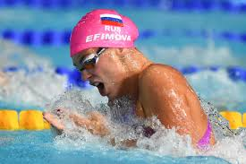
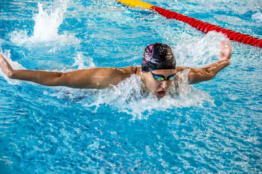

Привет,меня зовут Самира. Я сама хожу на плавание, мне очень нравится туда ходить! Если ты хочешь узнать что-то новое о плаванье, то этот сайт для тебя.
Плавание - одно из древнейших «изобретений» человечества. Первобытный человек научился пользоваться огнем, придумал колесо, освоил письменность, а также научился плавать. Умение плавать зафиксировано в таких источниках как Гильгамеш, Илиада, Одиссея, Библия, Беовульф, и других мифах и сагах.
Первая книга о плавании была написана в 1538 немецким профессором Николасом Винманном и называлась - «Пловец или Диалог об Искусстве Плавания».
Плавательные бассейны бывают открытые, они расположены под открытым небом, и закрытые, в которых ванны находятся в помещении. А также они делятся на летние и круглогодичные. Самый распространенный размер ванн в плавательном бассейне 25 и 50 метров. Количество дорожек - от 5 до 10. В центре каждой дорожки по дну, а также на стенках ванны существует разметка, которая помогает пловцам плыть без отклонений от прямолинейного курса. В начале и в конце плавательного бассейна перед каждой дорожкой находятся стартовые тумбочки, с них пловцы прыгают в воду при старте. Тумбочки нужны для плавания такими стилями как кроль, баттерфляй и брасс. Для пловцов, которые используют стиль кроль на спине, на тумбочках имеются специальные рукоятки, за которые спортсмены держатся перед стартом. Детские бассейны обычно бывают любой формы и отличаются низким уровнем воды.
Плавание один из самых старых видов спорта. Спортивное плавание появилось в конце XV века. В 1515 г. в Венеции проводились состязания пловцов, это были одни из первых соревнований по плаванию. 